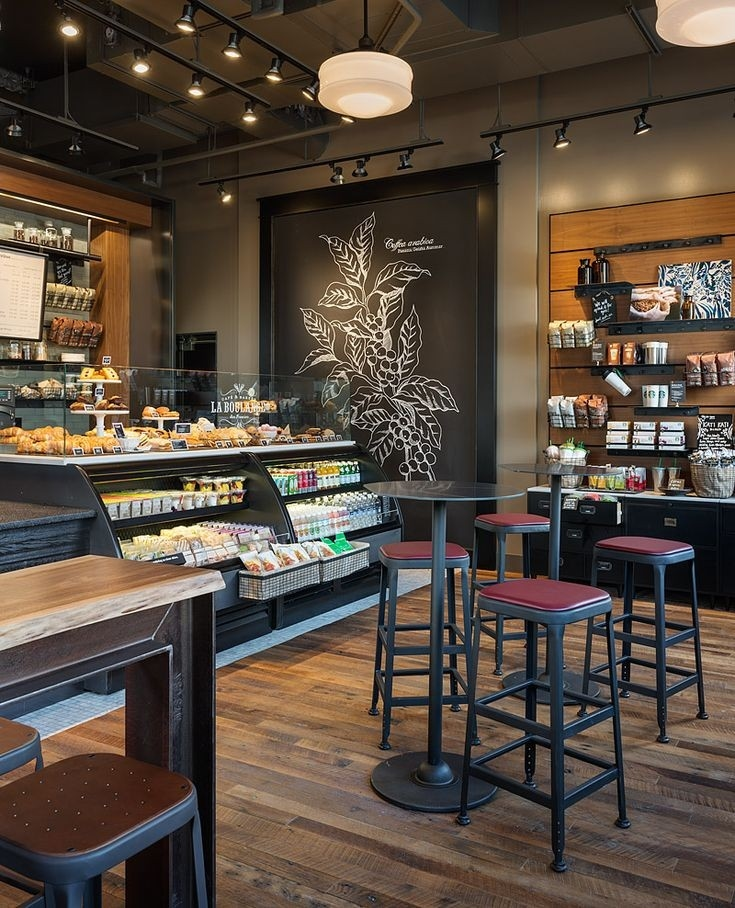
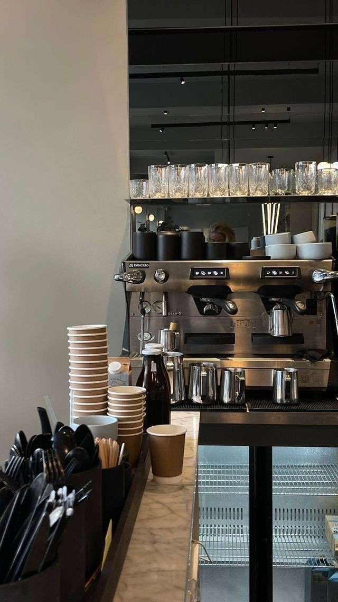

CARACTERISTICAS

Excelente paquete de bebidas

Nosotros somos una Cafetería que lleva por nombre Baby G’s Cafe. Es una cafetería totalmente artesanal que utiliza productos totalmente orgánicos y locales , a esto nos referimos a que nuestros productos están realizados con insumos de la mejor calidad libres de cualquier proceso industrial y contaminación, todo echo por comerciantes locales que son de nuestra entera confianza.
Baby G’s Cafe ses una Cafetería que como objetivo principal tiene ser un establecimiento totalmente saludable para nuestros consumidores. Nuestros productos son orgánicos de excelente calidad que hacen que nuestros productos conserven un sabor único, fresco e inigualable
Quiero obtener mas informacionNuestro negocio es pequeño y apenas está comenzando entonces se podría considerar como una microempresa ya que contamos con un número mínimo de empleados.
revisamos si tenemos todo lo necesario para la preparación de nuestras bebidas alternas al café (las hojas y frutas para la Infusiones y los Tés, los saborizantes para los Granizados y los que utilizamos para las Malteadas y los Frappés).
MASencargamos de moler y triturar en grano de café de la manera más cuidadosa posible para luego añadirlo a nuestra máquina de café, junto a esta acción nos encargamos de poner los demás insumos necesarios en su lugar para poder acceder a ellos con rapidez y facilidad.
MASelaboración de las mezclas que ocuparemos para realizar pedidos que se presenten en el momento (como lo son la masa para las crepas, los toppings que le agregamos a nuestros snacks, las salsas y aderezos de los diferentes bocadillos, etc).
MASiniciamos con la elaboración y preparación de los postres y snacks que vendemos a diario junto con los extras que llevan.
MAS